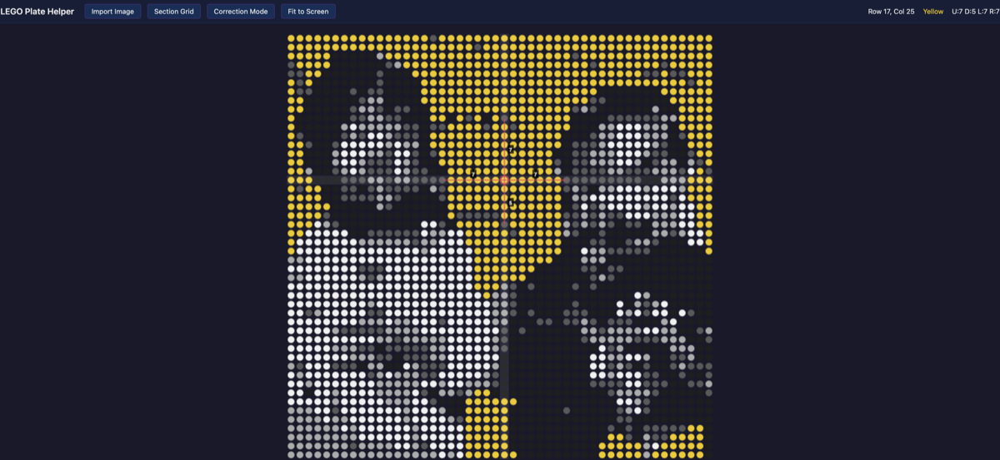

Launch
The First Working Version
Building a 48x48 LEGO mosaic means placing 2,304 tiny dots in the right colors.
Without reference points, you're constantly counting and losing your place.
The first version solved this: drop in your reference photo, and the app auto-detects all 2,304 colors
and shows them as an interactive grid. Hover any dot to see how far you are from the next
color change in every direction.
Also included from day one: zoom and pan, row/column crosshair highlighting,
coordinates display, a section grid (8x8 chunks), and a correction mode to fix any
mis-detected colors. All in a single HTML file.


Fix
Distance Was Off By One
The distance numbers were counting the different-colored boundary dot. If you were 3
same-colored dots away from a change, it showed "4". Fixed to only count same-color dots
— which matches what you actually count on the real plate.
Improvement
The "Zero Distance" Problem
When the very next dot was already a different color, the distance was 0 and the app
showed nothing — no line, no number. But that's exactly when you need help most.
The fix: two modes. Red lines show how many same-color dots extend in a direction.
Cyan lines appear when the neighbor is different, showing how long that
adjacent color block is — a useful landmark for counting on the real plate.
Simplify
Removed the Crop Step
The original had a crop/alignment screen with draggable corner handles. In practice,
reference photos are already just the plate. Removed the entire crop UI — now it goes
straight from image load to the interactive grid. One fewer step.
Feature
Embedded Demo Image
To share the app as a single file that works anywhere — even hosted on the web —
the demo mosaic was embedded directly as base64. A "Load Demo" button instantly shows
the mosaic without picking a file. The HTML is ~500KB but fully self-contained.
Real World
On the Workbench
Here's the actual build in progress. Bags of dots sorted by color, a row counter on the side,
and the app running on a laptop nearby. It works.
Feature
Build Order with Speech
Counting dots row by row is tedious. The new Build Order mode lets you click any dot,
pick a direction, and the app computes the full sequence of color runs along that line.
It shows a side panel listing each run ("3x Light Gray, 1x White, 2x Black...") and
highlights the path on the canvas in red.
Best part: it speaks the sequence out loud using the browser's speech synthesis.
You can keep your eyes on the plate and just listen. Hit the Speak button to replay anytime.
Feature
Magnifier on Hover
At normal zoom levels the dots are tiny and hard to distinguish. Now when you hover
any dot, a circular magnifier appears in the top-right corner of the canvas showing
the hovered dot and its neighbors at a zoomed-in scale. The magnifier automatically
repositions when build order panels are open so it's never hidden.
Feature
Dual Build Panels — Left & Right
Two people can now build the mosaic at the same time. The single "Build Order" button
was replaced with "Build Left" and "Build Right" — each populating its own panel
on either side of the canvas.
Each panel has independent data, speech, and close controls. The canvas shows both
highlights simultaneously: blue for the left builder,
red for the right. Panels overlay the canvas
without shifting the mosaic, so the plate stays centered no matter which panels are open.